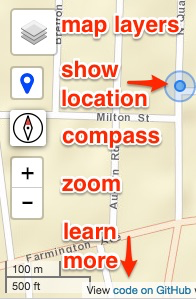
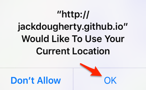
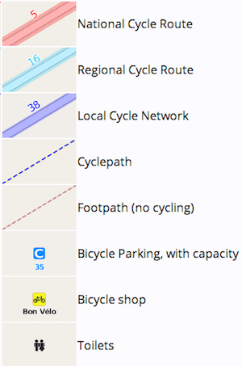

<!DOCTYPE html>
<html>
<head>
	<title>Discover New Britain 2019</title>
	<meta name="viewport" content="width=device-width, initial-scale=1.0">
	<meta charset="utf-8">
	<link rel="shortcut icon" href="favicon.ico">
	<!-- load Bootstrap CSS for mobile devices https://www.bootstrapcdn.com -->
		<link rel="stylesheet" href="https://cdn.jsdelivr.net/npm/bootstrap@5.2.0/dist/css/bootstrap.min.css">
	<!-- Load Leaflet from CDN-->
		<link rel="stylesheet" href="https://unpkg.com/leaflet@1.8.0/dist/leaflet.css" integrity="sha512-hoalWLoI8r4UszCkZ5kL8vayOGVae1oxXe/2A4AO6J9+580uKHDO3JdHb7NzwwzK5xr/Fs0W40kiNHxM9vyTtQ==" crossorigin="" />
		<script src="https://unpkg.com/leaflet@1.8.0/dist/leaflet.js" integrity="sha512-BB3hKbKWOc9Ez/TAwyWxNXeoV9c1v6FIeYiBieIWkpLjauysF18NzgR1MBNBXf8/KABdlkX68nAhlwcDFLGPCQ==" crossorigin=""></script>
	<!-- load jQuery  -->
		<script src="https://code.jquery.com/jquery-3.6.0.min.js" integrity="sha256-/xUj+3OJU5yExlq6GSYGSHk7tPXikynS7ogEvDej/m4=" crossorigin="anonymous"></script>
	<!-- load Font-Awesome -->
		<link rel="stylesheet" href="https://maxcdn.bootstrapcdn.com/font-awesome/4.7.0/css/font-awesome.min.css">
	<!-- load Leaflet.locatecontrol https://github.com/domoritz/leaflet-locatecontrol -->
		<link rel="stylesheet" href="https://cdn.jsdelivr.net/npm/leaflet.locatecontrol@0.72.0/dist/L.Control.Locate.min.css" />
		<script src="https://cdn.jsdelivr.net/npm/leaflet.locatecontrol@0.72.0/dist/L.Control.Locate.min.js" charset="utf-8"></script>
	<!-- load Leaflet-plugins to read GPX and KML https://github.com/shramov/leaflet-plugins-->
		<script src="https://cdnjs.cloudflare.com/ajax/libs/leaflet-plugins/3.4.0/layer/vector/GPX.min.js"></script>
		<script src="https://cdnjs.cloudflare.com/ajax/libs/leaflet-plugins/3.4.0/layer/vector/KML.min.js"></script>
	<!-- Load text-path Leaflet plugin to add arrows to polylines -->
		<script src="src/polyline-textpath.js"></script>
	<!-- load distance markers with geometry from local directory; see also style.css -->
		<script src="src/leaflet.geometryutil.js" type="text/javascript"></script>
		<script src="src/leaflet-distance-marker.js" type="text/javascript"></script>
	<!-- load Leaflet.SlideMenu from local directory -->
		<link rel="stylesheet" href="src/L.Control.SlideMenu.css" />
		<script src="src/L.Control.SlideMenu.js"></script>
	<!-- load custom css -->
		<link rel="stylesheet" href="style.css"/>
</head>
<body>
	<div id="map"></div>
	<script>

	// center map to match initial checkbox gatherBounds
	var map = L.map('map', {
	  center: [41.678616, -72.786799],
	  zoom: 13,
	  zoomControl: false, // add later to reposition
	  scrollWheelZoom: false,
		attributionControl: false, // add later to prepend
		tap: false
	});

	// Prepend attribution and links to download GPX files
	L.control.attribution({prefix: 'Download routes from RWGPS: <a href="https://ridewithgps.com/routes/30768400" target="_blank">10 mi</a> - <a href="https://ridewithgps.com/routes/30768306" target="_blank">25 mi</a> - <a href="https://ridewithgps.com/routes/30768143" target="_blank">50 mi</a> | View <a href="https://github.com/jackdougherty/bikemapcode" target="_blank">code on GitHub</a>'}).addTo(map);

	var controlLayers = L.control.layers( null, null, {
	  position: "topleft",
	  collapsed: false
	}).addTo(map);

	L.control.locate({
		locateOptions: {maxZoom: 16}, // default = 18
		strings: {title: "Show my location"} // To do: resize icon to make text appear alongside
	}).addTo(map);

	new L.control.zoom({position: "topleft",}).addTo(map);

	// create the geocoding control, add to map, do NOT display results as markers
	// var searchControl = L.esri.Geocoding.geosearch({
	// 	position: 'topleft'
	// }).addTo(map);

	L.control.scale().addTo(map);

	// slide menu contents and position
	var contents = '<h4>BikeMapCode</h4>';
	contents += '<h5>Mobile-friendly web maps<br>with open-source templates</h5>';
	contents += '<p>Link to <a href="https://github.com/JackDougherty/bikemapcode">code and instructions on GitHub</a></p>';
	contents += '';
	contents += '<p>Distributed as-is with no warranty</p>';
	contents += '<p>Stop your bike in a safe place before using</p>';
	contents += '<p>Requires internet access to view maps and location</p>';
	contents += '<p>Allow smartphone browser to show your location<br> - iPhone > Settings > Privacy > Location Services (On) > Safari (While Using)<br> - Android (to come)</p>';
	contents += '<p>Click OK if browser asks permission to show your location</p>';
	contents += '';
	// contents += '<h5>Open Cycle Map layer legend</h5>';
	// contents += '';
	var slideMenu = L.control.slideMenu('', {position: 'topright', width: '300px', height: '100%', delay: '1'}).addTo(map);
	slideMenu.setContents(contents);

	// insert map title at top of layer control
	$('<h6 id="mapTitle">Discover New Britain 2019</h6>').insertBefore('div.leaflet-control-layers-base');

	// baselayers
	var CartoDB_Positron = L.tileLayer('https://{s}.basemaps.cartocdn.com/light_all/{z}/{x}/{y}{r}.png', {
		attribution: '&copy; <a href="https://www.openstreetmap.org/copyright">OpenStreetMap</a> contributors &copy; <a href="https://carto.com/attributions">CARTO</a>',
		subdomains: 'abcd',
		maxZoom: 20
	}).addTo(map);
	controlLayers.addBaseLayer(CartoDB_Positron, 'Light Street map');

	var Esri_WorldStreetMap = L.tileLayer('https://server.arcgisonline.com/ArcGIS/rest/services/World_Street_Map/MapServer/tile/{z}/{y}/{x}', {
		attribution: 'Tiles &copy; Esri'
	});
	controlLayers.addBaseLayer(Esri_WorldStreetMap, 'Street map');

	// get your own Open Cycle Map API key
	var OCM = L.tileLayer('https://{s}.tile.thunderforest.com/cycle/{z}/{x}/{y}.png?apikey=1d12526533cd4f0f9f1e166c7bb855d7', {
		attribution: 'Maps &copy; <a href="http://www.thunderforest.com/">Thunderforest</a>, Data &copy; <a href="http://openstreetmap.org">OpenStreetMap</a> contributors'
	});
	controlLayers.addBaseLayer(OCM, 'Open Cycle Map');

	// route overlays
	var nb10 = new L.GPX("routes/nb2019-10.gpx", {
		color: '#ff9900',
		distanceMarkers: { showAll: 11, offset: 1609, bgcolor: 'bg-yellow'} // meters per mile; bgcolor defined in style.css
	}).setText('>', {repeat: true, attributes: {fill: 'white'}}).addTo(map);
	controlLayers.addOverlay(nb10, '10 mile route <i class="color-line bg-yellow"></i>');

	var nb25 = new L.GPX("routes/nb2019-25.gpx", {
		color: 'blue',
		distanceMarkers: { showAll: 11, offset: 1609, bgcolor: 'bg-blue'} // meters per mile; bgcolor defined in style.css
	}).setText('>', {repeat: true, attributes: {fill: 'white'}}).addTo(map);
	controlLayers.addOverlay(nb25, '25 mile route <i class="color-line bg-blue"></i>');

	var nb50 = new L.GPX("routes/nb2019-50.gpx", {
		color: '#ff3399',
		distanceMarkers: { showAll: 11, offset: 1609, bgcolor: 'bg-pink'} // meters per mile; bgcolor defined in style.css
	}).setText('>', {repeat: true, attributes: {fill: 'white'}}).addTo(map);
	controlLayers.addOverlay(nb50, '50 mile route <i class="color-line bg-pink"></i>');

	// Thanks @ilyankou for gatherBounds function; update layer names
	function gatherBounds() {
		var checkedLayers = [];
		var allLayers = [
			nb10,
			nb25,
			nb50
		];

		for (l in allLayers) {
			if (map.hasLayer(allLayers[l])) {
				checkedLayers.push(allLayers[l]);
			}
		}

		if (checkedLayers.length > 0) {
			map.fitBounds(L.featureGroup(checkedLayers).getBounds());
		}
	}

	map.on('layeradd', function() {
		gatherBounds();
	});

	map.on('layerremove', function() {
		gatherBounds();
	});

	</script>
</body>
</html>
